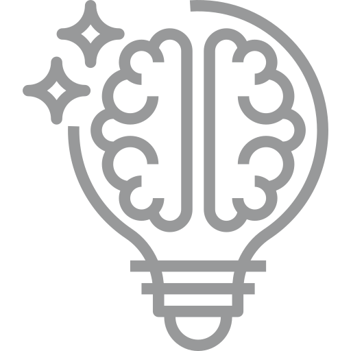

+ Správne vydefinovať priority a smerovanie firmy - hlavne pre menšie firmy a startupy je určenie priorít kľúčovou činnosťou, od ktorej sa odvíja celé plánovanie.

+ Vybudovať na trhu silný brand, statégiu rozvoja a komunitu - budujeme s vami komunitu zákazníkov využívajúcich vaše produkty a s tým v ruka v ruke branding celej značky.

+ Zanalyzovať konkurenciu a vyniknúť - zanalyzujeme konkurenciu, ich slabé a silné miesta a zároveň postavenie na trhu. Nájdeme spolu nové možnosti, ako vyniknúť.

+ Pretvoriť nápad v užitočný produkt - váš nápad spracujeme, vytuningujeme a prevedieme do produktu, ktorý nemá problém zarábať a podporovať ostatné činnosti spojené s vaším podnikaním.

+ Rozšíriť portfólio služieb a inovovať - inovácie idú ruka v ruke s technologickým posunom našej spoločnosti. Pomôžeme vám nájsť priestory, kde, čo a ako inovovať.
+ Odstrániť prebytočné náklady, zvyšovať efektivitu - optimalizáciou procesov alebo ich automatizáciou je možné znížiť náklady aj o 50% a zahrnúť nové metódy aj do budúceho rozvoja firmy.